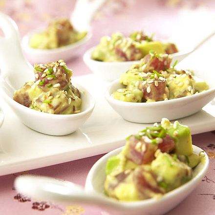

Rezepte für ein schnelles Abendessen | Chefkoch.de
2021.06.24 14:33
Direkt zum Inhalt Rezepte Rezepte Rezepte finden Kategorien Empfehlungen Wochenplan Rezeptsammlungen Was koche ich heute? Was backe ich heute? Rezept eingeben Neue Rezepte Rezept des Tages Neue Rezeptbilder Zufallsrezept Schritt-für-Schritt-Anleitungen Vorspeisen & Salate Hauptgerichte Backen & Süßes Markenrezepte Kenwood Lee Kum Kee Uncle_Bens BÜRGER Henglein Gallo daucy Leerdammer WW_Deutschland Bertolli-Olivenöl Magazin Magazin Aktuelles Chefkoch trifft Fackelmann Probier was Neues! Küchengeräte im Vergleich Die Redaktion empfiehlt Genuss - leckere Ideen für jeden Tag Kochen für Groß und Klein Best of BBQ Im Pizzarausch Leckere Urlaubsküche Chefkoch-Lieblinge des Monats Familienküche Chefkoch Blog Magazin Unsere Top-Rezepte Alltagsküche Endlich Frühling Länderküche Backen Vegetarisch & Vegan Low Carb & Ernährung Trends Gast & Gastgeber Über den Tellerand Fleisch & Fisch Chefkoch Printmagazin Jetzt kennenlernen Unsere Angebote Community Community Foren Kochen Backen Getränke Sonstige Kochthemen Lifestyle Plauderecke Chefkoch informiert Forenmoderatoren Forensuche Aktuelle Beiträge Weitere Inhalte Chefkoch Gruppen Aktive User Netiquette Fotoalben Kochen & Rezepte Tiere Landschaft Menschen & Portrait Reisen Technik Chefkoch Events Video Video Chefkoch.de Videos Probier was Neues! Mit Chefkoch um die Welt Lieblingsrezepte Einfach lecker Rikes Backschule Fabios Kochschule Hack'n'Roll Brot backen Die Redaktion empfiehlt Rhabarberkompott
Das beliebte Grundrezept
Veggie-BratlingeAus Haferflocken und Käse
Spaghetti mit BärlauchKöstliche Frühlingspasta
Kochbuch Profil Nachrichten Freunde Foren-Favoriten Rezeptentwürfe Rezeptfotos Gruppen Fotoalben Logout Login | Registrierung Login Registrierung Newsletter Haupt-Navigation umschalten Abbrechen Präsentiert von Startseite Magazin Stay At Home And Cook Stay At Home And CookRezepte für ein schnelles Abendessen
Party Wraps mit Frischkäse und Putenbrust
(Foto: Chefkoch-Video) Zum RezeptAvocados mit Rucola und Parmaschinken
(Foto: Bali-Bine) Zum RezeptGudruns Apfel-Speck-Ziegenkäse Türmchen mit Honig und Thymian
(Foto: CK_Print-Magazin / Chiara Cigliutti) Zum RezeptItalienischer Brotsalat
(Foto: CK_Print-Magazin / Westermann-Buroh) Zum RezeptFleischtomaten mit Muskatnusscroûtons und Mozzarella
(Foto: feuervogel) Zum RezeptTomaten-Auberginen-Avocado-Burger
(Foto: Sreyleap) Zum RezeptFitness Sandwich
(Foto: sAdormidera) Zum RezeptSchmandbrötchen mit Thunfisch
(Foto: Happiness) Zum RezeptFeta aus dem Ofen mit Röstbrot
(Foto: Chrissii156) Zum RezeptSchneller Flammkuchen
(Foto: CK_Print-Magazin / Chiara Cigliutti) Zum RezeptZucchini-Schinken-Rührei auf Brot
(Foto: ManuGro) Zum RezeptCrostini mit Pilzen
(Foto: feuervogel) Zum RezeptPizza-Schnitte für zwischendurch
(Foto: CK_Print-Magazin / Jan-Peter Westermann) Zum RezeptPa amb oli
(Foto: CK_Print-Magazin) Zum RezeptAppenzeller Brotkas
(Foto: Happiness) Zum RezeptFrischkäse-Oliven-Häppchen
(Foto: Nayita) Zum RezeptToast Hawaii
(Foto: CK_Print-Magazin / Chiara Cigliutti) Zum RezeptBlätterteigtaschen mit Schinken und Frischkäse
(Foto: brilliant) Zum RezeptTomate-Mozzarella-Toast
(Foto: ManuGro) Zum RezeptGerolltes Zwiebelbrot mit Frischkäse
(Foto: nicituch) Zum RezeptRäucherlachs-Bagel mit Graved Sauce
(Foto: Jennifer_Melanie) Zum RezeptGefüllte Pizzabrötchen
(Foto: s-fuechsle) Zum RezeptPan Bagnat nach Ange
(Foto: Wildkraut) Zum RezeptBauern-Kartoffelpuffer
(Foto: hatu66) Zum RezeptNew York Club Sandwich
(Foto: Chefkoch-Video) Zum Rezept Previous Next Party Wraps mit Frischkäse und P… Avocados mit Rucola und Parmasch… Gudruns Apfel-Speck-Ziegenkäse T… Italienischer Brotsalat Fleischtomaten mit Muskatnusscro… Tomaten-Auberginen-Avocado-Burge… Fitness Sandwich Schmandbrötchen mit Thunfisch Feta aus dem Ofen mit Röstbrot Schneller Flammkuchen Zucchini-Schinken-Rührei auf Bro… Crostini mit Pilzen Pizza-Schnitte für zwischendurch Pa amb oli Appenzeller Brotkas Frischkäse-Oliven-Häppchen Toast Hawaii Blätterteigtaschen mit Schinken … Tomate-Mozzarella-Toast Gerolltes Zwiebelbrot mit Frisch… Räucherlachs-Bagel mit Graved Sa… Gefüllte Pizzabrötchen Pan Bagnat nach Ange Bauern-Kartoffelpuffer New York Club Sandwich vorheriges Element nächstes Element 1 – Party Wraps mit Frischkäse und… 2 – Avocados mit Rucola und Parmas… 3 – Gudruns Apfel-Speck-Ziegenkäse… 4 – Italienischer Brotsalat 5 – Fleischtomaten mit Muskatnussc… 6 – Tomaten-Auberginen-Avocado-Bur… 7 – Fitness Sandwich 8 – Schmandbrötchen mit Thunfisch 9 – Feta aus dem Ofen mit Röstbrot 10 – Schneller Flammkuchen 11 – Zucchini-Schinken-Rührei auf B… 12 – Crostini mit Pilzen 13 – Pizza-Schnitte für zwischendur… 14 – Pa amb oli 15 – Appenzeller Brotkas 16 – Frischkäse-Oliven-Häppchen 17 – Toast Hawaii 18 – Blätterteigtaschen mit Schinke… 19 – Tomate-Mozzarella-Toast 20 – Gerolltes Zwiebelbrot mit Fris… 21 – Räucherlachs-Bagel mit Graved … 22 – Gefüllte Pizzabrötchen 23 – Pan Bagnat nach Ange 24 – Bauern-Kartoffelpuffer 25 – New York Club SandwichAbends kommt meist die ganze Familie zusammen: Da sitzen wir gemeinsam um den Esstisch in der Küche, quatschen über den Tag und genießen die Zeit miteinander. Aber ihr kennt das bestimmt auch: Alle sind recht k.o. und deshalb muss das Essen rasch auf den Tisch.
Dabei muss es längst nicht immer das klassische Butterbrot mit Wurst und Käse sein. Wir haben für euch 25 schnelle und zugleich ausgefallene Rezepte herausgesucht, die ihr in 30 Minuten zubereiten könnt. So kommt Abwechslung auf den Tisch! Wie wäre es diese Woche mal mit italienischem Brotsalat , einem schnellen Flammkuchen mit Zwiebeln und Speck oder einem gesunden Tomaten-Auberginen-Avocado-Burger ? Wir wünschen Euch viel Spaß beim Ausprobieren und Schlemmen!
Ähnliche Artikel
Schnelle Ofengerichte - 45 Rezeptideen fürs Mittagessen
Diese Ofengerichte schmecken der ganzen Familie
Snacks für einen gemütlichen Abend
So versüßen wir uns gemütliche Abende in den eigenen vier Wänden
Top 30: Günstige und schnelle Rezepte
Geniale Rezepte, die schnell gehen und den Geldbeutel schonen
Pesto selber machen: Rezepte und Tipps
Nutzt die Zeit und probiert, Pesto mal selber zu machen
Gesunde Ernährung im Home Office
Rezepte und Tipps für eine gesunde Ernährung im Home Office
Brot backen: 50 Rezepte und Tipps für Anfänger
Die besten Brot-Rezepte zum selber Backen
Bananenbrot selber machen: super saftig und einfach
Bananenbrot ist super saftig und schnell gemacht
Backen mit Kindern: Tipps und Rezepte
Auch im Frühling gibt es so manche Leckerei So klappt das gemeinsame Backen
Deckel auf - Der Chefkoch Podcast
Spannende Geschichten rund um die Themen Ernährung, Essen & Genuss
Brainfood im Homeoffice
Wer sich auf sein Gehirn verlassen muss, isst besser die richtigen Dinge!
Schnelles Mittagessen für die ganze Familie: 25 Rezepte
Diese Gerichte sind ruck, zuck fertig und schmecken der ganzen Familie
10 Reisgerichte in 30 Minuten
Stillt euren Reishunger mit diesen 10 abwechslungsreichen Gerichten
Schnelle Low-Carb-Gerichte
In 30 Minuten gibt s Essen! Und das auch noch Low-Carb und lecker!
One Pot Pasta: Nudeln, Sauce – alles aus einem Topf
Nudeln, Sauce – alles super schnell und aus einem einzigen Topf. So gelingt sie euch garantiert
Top 10: Rezepte mit 5 Zutaten
10 schnelle Rezepte mit nur 5 Zutaten für den großen Hunger
Schnelle Couscous-Rezepte – Unsere Top 20
10 Minuten quellen lassen und los geht s! Ob Salat, Bratling oder Milchreis – so vielseitig ist Couscous
25 Toast-Rezepte
Warum Toast-Brote gerade sehr gefragt sind und uns schnell happy machen
10 Rezepte in 10 Minuten
Diese leckeren Blitzrezepte stehen ruck-zuck auf dem Tisch
Schnelle vegetarische Rezepte für den Alltag
Einfache Gerichte in vegetarisch, lecker und schnell? Euer Wunsch ist uns Befehl!
10 schnelle Rezepte für die ganze Familie
Diese Rezepte sind fix auf dem Tisch und schmecken Groß und Klein
Kochen für Kinder: gesund essen, Tag für Tag
Leckere Rezepte für Frühstücksbrot, Mittagessen & Co.
20-Minuten-Pasta
Diese 15 Nudelgerichte stehen in 20 Minuten auf eurem Tisch!
Top 15: Einfache Ofengerichte
Bei diesen Rezepten übernimmt der Ofen die meiste Arbeit
Tolle Ideen für süßes und herzhaftes Hefegebäck
Hier findet ihr tolle Rezeptideen für leckeres Hefegebäck.
Günstig kochen – Tipps & Rezepte
Auch mit kleinerem Budget ganz einfach köstliche Gerichte kochen
Die besten Rezepte für Kuchen & Torten
Ihr habt gerade viel Zeit zu backen? Hier gibt s die passende Top 50 dazu!
Zur Kommentar-Verwaltung dieses Artikels Cache dieses Artikels löschen .Kommentare
Weitere Kommentare anzeigen
Was sagst du zum Thema? Hast du noch weitere Tipps? Dann freuen wir uns auf deinen Kommentar.
Was sagst du zum Thema? Hast du noch weitere Tipps? Dann freuen wir uns auf deinen Kommentar.
Um selbst Kommentare abgeben zu können, musst du dich bei Chefkoch.de registrieren oder mit deinem Benutzernamen und Passwort anmelden .
"Rezepte für ein schnelles Abendessen" via mail teilen "Rezepte für ein schnelles Abendessen" via whatsapp teilen "Rezepte für ein schnelles Abendessen" via pinterest teilen "Rezepte für ein schnelles Abendessen" via facebook teilen "Rezepte für ein schnelles Abendessen" via twitter teilen top Folge Chefkoch "Folge uns auf instagram! "Folge uns auf pinterest! "Folge uns auf facebook! "Folge uns auf twitter! "Folge uns auf youtube! Zur Desktop-Version Zur Mobile-Version Newsletter Zum Newsletter anmelden Wir sind für dich da FAQ Unternehmen Presse Jobs Übersicht Chefkoch Blog Impressum AGB Datenschutz Datenschutz-Einstellungen Werben Sie bei uns Nutzungsbasierte Online Werbung Print-Abo Live Rezeptsuchen apfelwaffeln rezepte , holunderlütengelee rezepte , linsenlasagne rezepte , papageienkuchen rezepte , parmesanchips rezepte , pizzakuchen rezepte , reispuffer rezepte , somertorte rezepte , tomatentarte rezepte , wokgemüse rezepte © 1998-2021 Chefkoch GmbH- 21 schnelle Rezepte für einen leckeren Feierabend .
- Kochbuch: Schnelles Abendessen | EAT SMARTER
- Schnelles Abendessen | Leckere Kochideen | Kitchen Stories
- Rezepte für ein schnelles Abendessen | Chefkoch.de
- Schnelle Mittagessen - 6 Rezepte unter 30 Minuten • Koch-Mit
- [Schnell & einfach] 3112 leckere Rezepte zum Abendessen .
- Gesunde-Abendessen-Rezepte | Swissmilk
- 2871 leckere Rezepte fürs Abendessen - REWE
- 900+ ABENDESSEN SCHNELL & EINFACH . - Pinterest
- Abendessen-Rezepte - einfach und lecker | DasKochrezept.de
- 21 schnelle Rezepte für einen leckeren Feierabend .
- Kochbuch: Schnelles Abendessen | EAT SMARTER
- Schnelles Abendessen | Leckere Kochideen | Kitchen Stories
- Rezepte für ein schnelles Abendessen | Chefkoch.de
- Schnelle Mittagessen - 6 Rezepte unter 30 Minuten • Koch-Mit
- [Schnell & einfach] 3112 leckere Rezepte zum Abendessen .
- Gesunde-Abendessen-Rezepte | Swissmilk
- 2871 leckere Rezepte fürs Abendessen - REWE
- 900+ ABENDESSEN SCHNELL & EINFACH . - Pinterest
- Abendessen-Rezepte - einfach und lecker | DasKochrezept.de
